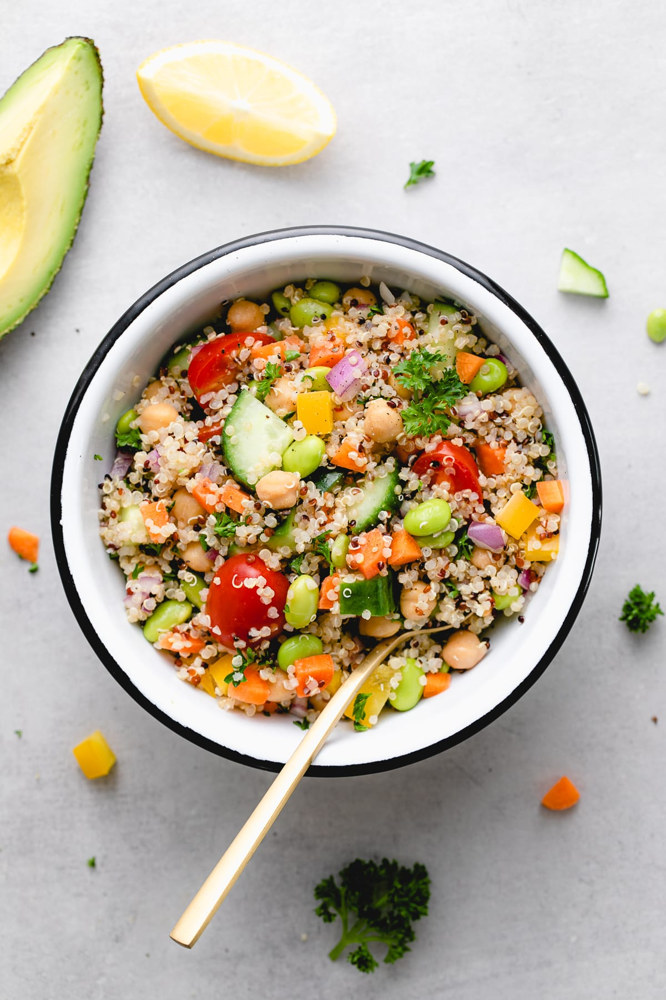

Vegetarian Quinoa Salad

Description
A refreshing and nutritious salad combining fluffy quinoa with crisp cucumber, juicy cherry tomatoes, vibrant bell peppers, red onions, feta cheese, and black olives. Tossed in a simple olive oil and balsamic vinegar dressing, this salad is a delightful medley of colors and textures.
Ingredients:
- 1 cup quinoa, cooked and cooled
- Cucumber, diced
- 1 cup cherry tomatoes, halved
- 1 bell pepper, diced
- 1/2 red onion, finely chopped
- 1/4 cup feta cheese, crumbled
- 1/4 cup black olives, sliced
- 3 tablespoons olive oil
- 2 tablespoons balsamic vinegar
- Salt and pepper to taste
- Fresh parsley for garnish
Steps:
- In a large bowl, combine quinoa, cucumber, cherry tomatoes, bell pepper, red onion, feta cheese, and black olives.
- In a small bowl, whisk together olive oil, balsamic vinegar, salt, and pepper.
- Pour the dressing over the salad and toss to combine.
- Garnish with fresh parsley before serving.